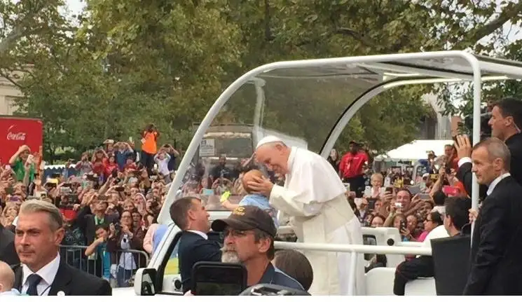

{kind=link}
Since then, I’ve met others who’ve had a brushing with the pope and been profoundly affected. Talking with them got me wondering if I’d ever revisit that lost chance.
So when I heard Pope Francis would be visiting the United States, my heart fluttered with hope. And when I received a call from the Catholic Diocese of Fargo in July asking if I’d be willing to attend and write on the 2015 World Meeting of Families in Philadelphia, which would include a papal visit, my heart leapt for joy.
Though I greatly admire his immediate predecessors, Pope Francis has especially endeared himself to me, perhaps because of where I was at spiritually when he became pontiff, not to mention his deeply resonating messages of joy and mercy.
Newly returned from Philly, I’m still high on having been just feet from our holy father twice. My favorite memento from the trip came from an image I gleaned atop a small stool in the midst of a crowd of thousands at Benjamin Franklin Parkway.
We’d crammed ourselves against the interior fence there, trying to position ourselves for a good look at our “papa.” After so much anticipation, it was breathtaking to see him finally round the bend in the “popemobile,” surging toward us in his white cassock and zucchetto, waving and smiling.
Those few minutes, when he passed directly in front of me and the Jeep stopped nearby so he could hold and kiss a few babies, will be forever pressed into my heart. As will be the moment I received the communion host blessed by his hands, leaving me in a puddle of grateful tears.
But along with those moments of elation, I’ve been challenged to consider the thoughts of those who caution on what they view as “pope worship.”
When I first heard that term, I stopped. Was it true? Did I worship the pope? Certainly, I am guilty of being enamored, but worship?
The day we welcomed Pope Francis to Philadelphia, I shared on Facebook, “We do not worship the pope … but Jesus the Christ that shines out at us from him.” And I stand by that statement, which has been my heart’s reality.
Catholics are not the only ones to have become smitten by Pope Francis, but those of us from this faith tradition consider him, as all since our first pope, Peter, the Vicar of Christ.
Though not Christ, the pope is an earthly embodiment of our Lord in our time. He is the human representative — someone we can see and occasionally touch — who brings us, in a special, human way, into the presence of God here and now.
Being so near the pope surpassed anything I have felt before, whether in hearing a favorite speaker talk or musician perform. And yet, even with my pounding heart and squeals of delight, I retain perspective.
A moment during the pope’s initial, evening visit at the parkway brought the necessary clarity.
For hours, we’d been on our feet waiting to see him, expectant. We cheered as he appeared on the jumbotron at Independence Hall, then held our collective breath and shifted our feet as he stopped for needed rest at a nearby seminary.
And then, finally, after the sun had set, he appeared, lit up brightly against the dark night. It seemed surreal.
Though excited beyond words, I also felt keenly my smallness, knowing how many others yearned like I did to make some kind of connection with Pope Francis, realizing the connection we felt to him could not possibly be reciprocal.
As he passed, I sensed Jesus in him, but even after his white glow faded, that presence of Jesus remained with me, and I heard the words, “I am here, dear daughter, and I see you and your heart. You are precious, and you are mine.”
At that, the distinction between human and divine had become plain.
I love Pope Francis — his heart, his love and the messages he’s come to share with our broken world — but I reserve my worship for the one who knows me in turn, more than I know myself.
Indeed, there’s room both for love of the pope and worship of God. And it’s all good.
[For the sake of having a repository for my newspaper columns and articles, I reprint them here, with permission, a week after their run date. The preceding ran in The Forum newspaper on Oct. 3, 2015.]